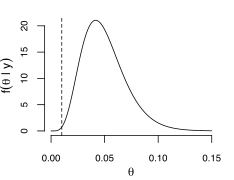

Probabilities are defined for events.
An event is some outcome that we could potentially or hypothetically observe or experience.
In mathematical notation, we often write an event as a capital letter.
Probabilities must be between zero and one, i.e., \(0 ≤ P(A) ≤ 1\) for any event \(A\).
Probabilities add to one, i.e., if we add up the probabilities of all possible events, those probabilities must add to one.
The complement of an event, \(A^\mathsf{c}\), means that the event does not happen. Since probabilities must add to one, \(P(A^\mathsf{c}) = 1 − P(A)\).
If \(A\) and \(B\) are two events, the probability that \(A\) or \(B\) happens (inclusive) is the probability of the union of the events \(P(A ∪ B) = P(A) + P(B) − P(A ∩ B)\).
If a set of events \(A_i\) for \(i = 1,\dots,m\) are mutually exclusive, then \(P\left(\bigcup_{i=1}^{m}A_i\right)=\sum_{i=1}^{m}P(A_i)\).
The odds for event A, denoted \(\mathcal{O}(A)\) is defined as \(\mathcal{O}(A) = {P(A) \over P(A^\mathsf{c})} = {P(A) \over 1\, −\, P(A)}\).
The expected value of a random variable \(X\) is a weighted average of values \(X\) can take, with weights given by the probabilities of those values.
If \(X\) can take on only a finite number of values (say, \(x_1, x_2, \dots , x_n\)), we can calculate the expected value as \(E(X)=\sum_{i=1}^{n}x_i \cdot P(X=x_i)\).
The simple form of Bayes Theorem involves two discrete events
\(P(A|B) = {P(A ∩ B) \over P(B)} = {P(B|A) \cdot P(A) \over P(B|A) \cdot P(A) + P(B|A^\mathsf{c}) \cdot P(A^\mathsf{c})}\).
If the events \(A_1, \dots, A_m\) are mutually exclusive and \(\sum_{i=1}^{m}P(A_i)=1\), then we can write Bayes Theorem as
\(P(A_1|B) = {P(B|A_1) \cdot P(A_1) \over \sum_{i=1}^{m} P(B|A_i) \cdot P(A_i)}\).
When dealing with a continuous random variable \(θ\), we can write the conditional density for \(θ\) given \(y\) as
\(f(\theta|y) = {P(y|\theta) \cdot P(\theta) \over \int P(y|\theta) \cdot P(\theta) d\theta}\).
Indicator function (Heaviside function or unit step function) is a function that takes the value one if its argument is true, and the value zero if its argument is false.
Written as \(I_{\{A\}}(x)\) or \(1_{\{A\}}(x)\).
If the context is obvious, we can also simply write \(I_{\{A\}}\).
The expected value, also known as the expectation or mean, of a random variable \(X\) is denoted \(E(X)\).
It is the weighed average of all values X could take, with weights given by the probabilities of those values.
If X is discrete-valued, then \(E(X) = \sum_x x\cdot P(X=x) = \sum_x x\cdot f(x)\).
If X is a continuous random variable with probability density function (PDF) f(x), we replace the summation with an integral
\(E(X) = \int_{-\infty}^{\infty} x\cdot f(x)dx\).
Let \(X\) and \(Y\) be random variables with \(E(X) = µX\) and \(E(Y ) = µY\).
The mean of a new random variable \(Z = aX + bY +c\) is \(E(Z) = E(aX +bY +c) = aE(X) + bE(Y ) + c = aµX + bµY + c\) where \(a, b, c\) are any real constants.
We also have \(E(g(X)) = \int_{-\infty}^{\infty} g(x)\cdot f(x)dx\).
In general, \(E(g(X)) \ne g(E(X))\).
The variance of random variable measures how spread out its values are.
For \(X\) is a random variable with mean \(E(X) = µ\), the variance is the expected value of the squared deviation of X from its mean \(E[(X − µ)^2]\).
The square root of variance is called the standard deviation.
If \(X\) is discrete, it is calculated as \(Var(X) = \sum_x (x - \mu)^2 \cdot P(X = x)\).
If \(X\) is continuous, it is \(Var(X) = \int_{-\infty}^{\infty} (x - \mu)^2 \cdot f(x)dx\)
A convenient formula for the variance is \(Var(X) = E[X^2] − (E[X])^2\).
Let \(X\) and \(Y\) be random independent variables with \(Var(X) = σ^2_X\) and \(Var(Y) = σ^2_Y\).
The variance of \(Z = aX + bY + c\) is then \(Var(Z) = Var(aX + bY + c) = a^2Var(X) + b^2Var(Y) + 0 = a^2σ^2_X + b^2σ^2_Y\) where \(a, b, c\) are any real constants.
The Bernoulli distribution is the distribution of the outcome of a single Bernoulli trial.
\(X \sim \text{B}(p)\)
\(P(X=x|p) = f(x|p) = p^x(1-p)^{1-x}I_{\{x\in\{0,1\}\}}(x)\)
\(E[X] = p\)
\(Var[X] = p(1-p)\)
The binomial distribution is just the sum of the \(n\) independent Bernoullis.
\(X \sim \text{Bin}(n,p)\)
\(P(X=x|p) = f(x|p) = \binom{n}{x}p^x(1-p)^{n-x}\) for \(x=1,2,\dots,n\)
\(E[X] = np\)
\(Var[X] = np(1-p)\)
The geometric distribution is the number of trials needed to get the first success, i.e., the number of Bernoulli events until a success is observed.
\(X \sim \text{Geo}(p)\)
\(P(X=x|p) = p(1-p)^{x-1}\) for \(x=1,2,\dots\)
\(E[X] = {1 \over p}\)
The multinomial distribution is like a binomial when there are more than two possible outcomes, eg. we have \(n\) trials and there are \(k\) different possible outcomes which occur with probabilities \(p_1, \dots, p_k\).
\(f(x_1, \dots, x_k | p_1, \dots, p_k) = {n! \over x_1!\dots x_k!}p_1^{x_1} \dots p_k^{x_k}\)
The expected number of observations in category \(i\) is \(np_i\).
The Poisson distribution is used for counts, and arises in a variety of situations.
The parameter \(λ > 0\) is the rate at which we expect to observe the thing we are counting.
\(X \sim \text{Pois}(\lambda)\)
\(P(X=x|\lambda) = {\lambda^x\exp(-\lambda) \over x!}\) for \(x=0,1,2,\dots\)
\(E[X] = \lambda\)
\(Var[X] = \lambda\)
A Poisson process is a process wherein events occur on average at rate \(λ\), events occur one at a time, and events occur independently of each other.
The exponential distribution is often used to model the waiting time between random events.
Indeed, if the waiting times between successive events are independent from an \(\text{Exp}(λ)\) distribution, then for any fixed time window of length \(t\), the number of events occurring in that window will follow a Poisson distribution with mean \(tλ\).
\(X \sim \text{Exp}(\lambda)\)
\(f(x|\lambda) = \lambda e^{-\lambda x} I_{\{x\ge0\}}(x)\)
\(E[X] = {1 \over \lambda}\)
\(Var[X] = {1 \over \lambda^2}\)
Similar to the Poisson distribution, the parameter \(λ\) is interpreted as the rate at which the events occur.
If \(X_1, X_2, \dots, X_n\) are independent (and identically distributed \(\text{Exp}(\lambda)\)) waiting times between successive events, then the total waiting time for all \(n\) events to occur \(Y = \sum_{i=1}^n X_i\) will follow a gamma distribution with shape parameter \(α = n\) and rate parameter \(β = λ\).
\(Y \sim \text{Gamma}(\alpha,\beta)\)
\(f(y|\alpha,\beta) = {\beta^{\alpha} \over \Gamma(\alpha)} y^{\alpha-1}e^{-\beta y} I_{\{y\ge0\}}(y)\)
\(E[Y] = {\alpha \over \beta}\)
\(Var[Y] = {\alpha \over \beta^2}\)
\(\Gamma(·)\) is the gamma function, a generalization of the factorial function which can accept non-integer arguments.
If n is a positive integer, then \(Γ(n) = (n − 1)!\).
The exponential distribution is a special case of the gamma distribution with \(α = 1\).
As \(α\) increases, the gamma distribution more closely resembles the normal distribution.
The uniform distribution is used for random variables whose possible values are equally likely over an interval.
If the interval is \((a, b)\), then the uniform probability density function (PDF) \(f(x)\) is flat for all values in that interval and 0 everywhere else.
\(X \sim \text{Uniform}(a,b)\)
\(f(x|a,b) = { 1 \over b\,-\,a} I_{\{a\ge x\ge b\}}(x)\)
\(E[X] = {a\,+\,b \over 2}\)
\(Var[X] = {(b\,-\,a)^2 \over 12}\)
The standard uniform distribution is obtained when \(a = 0\) and \(b = 1\).
The beta distribution is used for random variables which take on values between 0 and 1.
\(X \sim \text{Beta}(\alpha,\beta)\)
\(f(x|\alpha,\beta) = {Γ(\alpha+\beta) \over Γ(\alpha)Γ(\beta)} x^{\alpha-1}(1-x)^{\beta-1} I_{\{0<x<1\}}(x)\)
\(E[X] = {\alpha \over \alpha+\beta}\)
\(Var[X] = {\alpha\beta \over (\alpha+\beta)^2(\alpha+\beta+1)}\)
The standard Uniform(0, 1) distribution is a special case of the beta distribution with \(α = β = 1\).
The normal, or Gaussian distribution arises as the limiting distribution of sums (and averages) of random variables, due to the Central Limit Theorem.
It is often used to model the “errors,” or unexplained variation of individual observations in regression models.
\(Z \sim \text{N}(0,1)\)
\(f(z) = {1 \over \sqrt{2\pi}} \exp(-{z^2 \over 2})\)
\(E[Z] = 0\)
\(Var[Z] = 1\)
For \(σ > 0\) and \(µ\) is any real constant, \(X = σZ+µ\) follows a normal distribution with mean \(µ\) and variance \(σ^2\) (standard deviation \(σ\)).
\(X \sim \text{N}(\mu,\sigma^2)\)
\(f(x|\mu,\sigma^2) = {1 \over \sqrt{2\pi\sigma^2}} \exp\left(-{(x-\mu)^2 \over 2\sigma^2}\right)\)
\(E(X) = E(σZ+µ) = σE(Z) + µ = σ · 0 + µ = µ\)
\(Var(X) = Var(σZ + µ) = σ^2Var(Z) + 0 = σ^2·1 = σ^2\)
If \(X_1 ∼ N(µ_1, σ^2_1)\) and \(X_2 ∼ N(µ_2, σ^2_2)\) are independent, then \(X_1+X_2 ∼ N(µ_1+µ_2, σ^2_1+σ^2_2)\).
If \(\overline{X}={1 \over n}\sum_{i=1}^{n}X_i\) the average of n independent and identically distributed (iid) normal random variables
\(X_i \overset{\text{iid}}{\sim} N(µ, σ^2)\) for \(i=1,\dots,n\) then \(\overline{X} \sim \text{N}(\mu,{\sigma^2 \over n})\).
If \(\sigma\) replaced by the sample standard deviation \(S=\sqrt{\sum_i(X_i-\overline{X})^2/(n-1)}\), \({\overline{X}-\mu \over \sigma/\sqrt{n}} \sim \text{N}(0,1)\) is no longer distributed as standard normal, but as a standard t distribution with degrees of freedom \(\nu=n−1\).
\(Y \sim \text{t}_{\nu}\)
\(f(y) = {\Gamma({\nu+1\over2}) \over \Gamma({\nu\over2})\sqrt{\nu\pi}} \left(1+{y^2\over\nu}\right)^{-({\nu+1\over2})}\)
\(E[Y] = 0\) if \(\nu > 1\)
\(Var[Y] = {\nu\over\nu\,-\,2}\) if \(\nu > 2\)
The t distribution is symmetric and resembles the normal distribution, but with thicker tails.
As the degrees of freedom increase, the t distribution looks more and more like the standard normal distribution.
The Central Limit Theorem is saying that with sufficiently large sample sizes, the sample average approximately follows a normal distribution.
Let \(X_1, \dots, X_n\) be independent and identically distributed with \(E[X_i] = µ\) and \(Var(X_i) = σ^2, 0 < σ^2 < ∞\),
then \({\sqrt{n}(\overline{X}-\mu)\over\sigma}\Rightarrow\text{N}(0,1)\).
That is, \(\overline{X}_n\) is approximately normally distributed with mean \(µ\) and variance \(σ^2/n\) or standard deviation \(σ/\sqrt{n}\).
When we want to maximize a function \(f(x)\), there are two things we may be interested in:
1. The value \(f(x)\) achieves when it is maximized, which we denote \(\max_x f(x)\).
2. The x-value that results in maximizing \(f(x)\), which we denote \(\hat{x} = \arg\max_x f(x)\).
Thus \(\max_x f(x) = f(\hat{x})\).
The cumulative distribution function (CDF) is defined as \(F(x) = P(X ≤ x)\) for random variable \(X\), exists for every distribution.
If \(X\) is discrete-valued, then the CDF is computed \(F(x) = \sum_{t=−∞}^{x} f(t)\) where \(f(t) = P(X = t)\) is the probability mass function (PMF).
If \(X\) is continuous, the CDF is computed with an integral \(F(x) = \int_{−∞}^x f(t)dt\) where \(f(t)\) is the probability density function (PDF).
Let \(a\) and \(b\) be any real numbers with \(a < b\), the probability that \(X\) falls between \(a\) and \(b\) is equal to \(P(a< X≤b)=P(X≤b)−P(X≤a)=F(b)−F(a)\).
The value x which satisfies equation \(P(X ≤ x) = p\) is called the \(p\) quantile (or \(100_p\) percentile) of the distribution of X.
The likelihood function measures the goodness of fit of a statistical model to a sample of data for given values of the unknown parameters.
It is formed from the joint probability distribution of the sample, but viewed and used as a function of the parameters only, thus treating the random variables as fixed at the observed values.
\(\mathcal{L}(\theta|x)=P(X=x|\theta)\)
Log-likelihood function is a logarithmic transformation of the likelihood function, often denoted by a lowercase \(l\) or \(\ell\).
\(\ell(\theta)=\log\mathcal{L}(\theta|x)\)
Because logarithms are strictly increasing functions, maximizing the likelihood is equivalent to maximizing the log-likelihood.
The maximum likelihood estimation (MLE) is a method of estimating the parameters of a probability distribution by maximizing a likelihood function, so that under the assumed statistical model the observed data is most probable.
\(\hat{\theta} = \arg\max_{\theta\in\Theta} \mathcal{L}(\theta|y)\)
The full expression for a posterior distribution of some parameter \(\theta\) is given by
\[f(\theta\mid x) = { f(x\mid\theta)f(\theta) \over \int_{-\infty}^{\infty}f(x\mid\theta)f(\theta)d\theta}\]It is often more convenient to work with the numerator only: \(f(\theta\mid x) \propto f(x\mid\theta)f(\theta)\), which is the likelihood times the prior.
We can multiply a function of \(\theta\) by any constant and maintain proportionality.
The reason we can write \(f(\theta\mid x) \propto f(x\mid\theta)f(\theta)\) is because the denominator \(\int_{-\infty}^{\infty}f(x\mid\theta)f(\theta)d\theta\) is free of \(\theta\). It is just a normalizing constant.
To evaluate posterior quantities such as posterior probabilities, we will eventually need to find the normalizing constant.
Specifically, the model is \(x_1, x_2, \dots, x_n \overset{\text{iid}}{\sim} \text{N}(\mu,\sigma^2_0)\), \(\mu\sim\text{N}(m_0,s^2_0)\) with \(\sigma^2_0\), \(m_0\) and \(s^2_0\) known. First consider the case in which we have only one data point x. The posterior is then
\(f(\mu\mid x) = {f(x\mid\mu)f(\mu) \over \int_{-\infty}^{\infty}f(x\mid\mu)f(\mu)d\mu} \propto f(x\mid\mu)f(\mu) = {1\over\sqrt{2\pi\sigma^2_0}}\exp\{-{1\over2\sigma^2_0}(x-\mu)^2\}{1\over\sqrt{2\pi s^2_0}}\exp\{-{1\over2s^2_0}(\mu-m_0)^2\}\)
\(\propto \exp\{-{1\over2\sigma^2_0}(x-\mu)^2\}\exp\{-{1\over2s^2_0}(\mu-m_0)^2\}\)
\(= \exp\left\{-{1\over2\sigma^2_0}(x-\mu)^2 -{1\over2s^2_0}(\mu-m_0)^2\right\}\)
\(= \exp\left\{-{1\over2}\left[{1\over\sigma^2_0}(x^2-2x\mu+\mu^2)+{1\over s^2_0}(\mu^2-2\mu m_0+m_0^2)\right]\right\}\)
\(= \exp\left\{-{1\over2}\left[{\mu^2\over\sigma^2_0}+{\mu^2\over s^2_0}+{-2x\over\sigma^2_0}\mu+{-2m_0\over s^2_0}\mu+{x^2\over\sigma^2_0}+{m_0^2\over s^2_0}\right]\right\}\)
\(= \exp\left\{-{1\over2}\left[\left({1\over\sigma^2_0}+{1\over s^2_0}\right)\mu^2-2\left({x\over\sigma^2_0}+{m_0\over s^2_0}\right)\mu+{x^2\over\sigma^2_0}+{m_0^2\over s^2_0}\right]\right\}\)
\(= \exp\left\{-{1\over2}\left[\left({1\over\sigma^2_0}+{1\over s^2_0}\right)\mu^2-2\left({x\over\sigma^2_0}+{m_0\over s^2_0}\right)\mu\right]\right\}\cdot\exp\left\{-{1\over2}\left[{x^2\over\sigma^2_0}+{m_0^2\over s^2_0}\right]\right\}\)
\(\propto \exp\left\{-{1\over2}\left[\left({1\over\sigma^2_0}+{1\over s^2_0}\right)\mu^2-2\left({x\over\sigma^2_0}+{m_0\over s^2_0}\right)\mu\right]\right\}\)
\(= \exp\left\{-{1\over2}\left[{1\over s_1^2}\mu^2-2\left({x\over\sigma^2_0}+{m_0\over s^2_0}\right)\mu\right]\right\}\)
where \(s_1^2=\left({1\over\sigma^2_0}+{1\over s^2_0}\right)^{-1}\)
\(= \exp\left\{-{1\over2}\left[{1\over s_1^2}\mu^2-2{s_1^2\over s_1^2}\left({x\over\sigma^2_0}+{m_0\over s^2_0}\right)\mu\right]\right\}\)
\(= \exp\left\{-{1\over2s_1^2}[\mu^2-2m_1\mu]\right\}\) where \(m_1=s_1^2\left({x\over\sigma^2_0}+{m_0\over s^2_0}\right)\)
The next step is to “complete the square” in the exponent:
\(f(\mu\mid x) \propto \exp\left\{-{1\over2s_1^2}[\mu^2-2m_1\mu]\right\}\)
\(= \exp\left\{-{1\over2s_1^2}[\mu^2-2m_1\mu+m_1^2-m_1^2]\right\}\)
\(= \exp\left\{-{1\over2s_1^2}[\mu^2-2m_1\mu+m_1^2]\right\}\cdot\exp\left\{m_1^2\over2s_1^2\right\}\)
\(\propto \exp\left\{-{1\over2s_1^2}[\mu^2-2m_1\mu+m_1^2]\right\}\)
\(= \exp\left\{-{1\over2s_1^2}(\mu-m_1)^2\right\}\)
which, except for a normalizing constant not involving \(\mu\), is the PDF of a normal distribution with mean \(m_1\) and variance \(s_1^2\).
The final step is to extend this result to accommodate \(n\) independent data points. The likelihood in this case is
\(f(x\mid\mu) = \prod_{i=1}^n {1\over\sqrt{2\pi\sigma_0^2}} \exp\left\{-{1\over2\sigma_0^2}(x_i-\mu)^2\right\}\)
\(= (2\pi\sigma_0^2)^{-n/2} \exp\left\{-{1\over2\sigma_0^2}\sum_{i=1}^n(x_i-\mu)^2\right\}\)
\(\propto \exp\left\{-{1\over2\sigma_0^2}\left[\sum_{i=1}^n x_i^2 - 2\mu\sum_{i=1}^n x_i+n\mu^2\right]\right\}\)
\(\propto \exp\left\{-{1\over2\sigma_0^2}\left[-2n\overline{x}\mu+n\mu^2\right]\right\}\)
We can repeat the steps above or notice that the data contribute only through the sample mean \(\overline{x}\) (and \(n\) which we assume is known). This means that \(\overline{x}\) is a “sufficient statistic” for \(\mu\), allowing us to use the distribution of \(\overline{x}\) as the likelihood (analogous to using a binomial likelihood in place of a sequence of Bernoullis). The model then becomes \(\overline{x}\!\mid\!\mu \sim \text{N}(\mu,{\sigma_0^2\over n}),\,\,\, \mu \sim \text{N}(m_0,s_0^2)\) We now apply our result derived above, replacing \(x\) with \(\overline{x}\) and \(\sigma_0^2\) with \(\sigma_0^2/n\). This yields the update equation presented in Lesson 10.1.
If you randomly guess on this question, you have a .25 probability of being correct. Which probabilistic paradigm from Lesson 1 does this argument best demonstrate?
⚡ CORRECT Classical
☐ WRONG Frequentist
☐ WRONG Bayesian
☐ WRONG None of the above
On a multiple choice test, you do not know the answer to a question with three alternatives. One of the options, however, contains a keyword which the professor used disproportionately often during lecture. Rather than randomly guessing, you select the option containing the keyword, supposing you have a better than 1/3 chance of being correct.
Which probabilistic paradigm from Lesson 1 does this argument best demonstrate?
☐ WRONG Classical
☐ WRONG Frequentist
⚡ CORRECT Bayesian
On average, one in three students at your school participates in extracurricular activities. You conclude that the probability that a randomly selected student from your school participates is 1/3.
Which probabilistic paradigm from Lesson 1 does this argument best demonstrate?
☐ WRONG Classical
⚡ CORRECT Frequentist
☐ WRONG Bayesian
For Questions 4-6, consider the following scenario:
Your friend offers a bet that she can beat you in a game of chess. If you win, she owes you $5, but if she wins, you owe her $3.
Suppose she is 100% confident that she will beat you. What is her expected return for this game? (Report your answer without the $ symbol.)
Enter answer here 3 This is \(3\cdot(1) - 5\cdot(0)\) If she is certain she will win, then she expects to receive the $3.
Chess:
Suppose she is only 50% confident that she will beat you (her personal probability of winning is p=0.5). What is her expected return now? (Report your answer without the $ symbol.)
Enter answer here -1 This is \(3\cdot(0.5) - 5\cdot(0.5)\). Clearly, she wouldn’t have offered this bet if she was only 50% confident that she would win.
Chess:
Now assuming your friend will only agree to fair bets (expected return of $0), find her personal probability that she will win. Report your answer as a simplified fraction.
Hint: Use the expected return of her proposed bet.
Enter math expression here \(5 \over 8\) Any value of \(p\) (the probability of her winning) lower than 5/8 would result in a negative expected return for your friend. She would not have offered these odds for such a \(p\).
For Questions 7-8, consider the following “Dutch book” scenario:
Suppose your friend offers a pair of bets:
(i) if it rains or is overcast tomorrow, you pay him $4, otherwise he pays you $6;
(ii) if it is sunny you pay him $5, otherwise he pays you $5.
Suppose rain, overcast, and sunny are the only events in consideration. If you make both bets simultaneously, this is called a “Dutch book,” as you are guaranteed to win money. How much do you win regardless of the outcome? (Report your answer without the $ symbol.)
Enter answer here 1 -4 + 5 if rain or overcast, 6 - 5 if sunny
Dutch book:
Apparently your friend doesn’t understand the laws of probability. Let’s examine the bets he offered.
For bet (i) to be fair, his probability that it rains or is overcast must be .6 (you can verify this by calculating his expected return and setting it equal to $0).
For bet (ii) to be fair, his probability that it will be sunny must be .5.
This results in a “Dutch book” because your friend’s probabilities are not coherent. They do not add up to 1. What do they add up to?
Enter answer here \(0.6 + 0.5 = 1.1\)
Which of the following (possibly more than one) must be true if random variable XX is continuous with PDF \(f(x)\)?
☐ WRONG \(\lim_{x \to \infty} f(x) = \infty\)
☐ WRONG \(X >= 0\) always
☐ WRONG \(f(x)\) is a continuous function One counter-example is the Uniform(0,1) PDF, which has jumps at 0 and 1.
⚡ CORRECT \(\int_{-\infty}^\infty f(x) dx = 1\)
☐ WRONG \(f(x)\) is an increasing function of \(x\)
⚡ CORRECT \(f(x) \ge 0\) always
If \(X \sim \text{Exp}(3)\), what is the value of \(P(X>1/3)\)? Round your answer to two decimal places.
Enter answer here 0.37 Check \(P(X>1/3) = \int_{1/3}^\infty 3e^{-3x} dx = -e^{-3x} \rvert_{1/3}^\infty = 0 - (-e^{-3/3}) = e^{-1} = 0.368\)
Suppose \(X \sim \text{Uniform}(0,2)\) and \(Y \sim \text{Uniform}(8,10)\). What is the value of \(E(4X + Y)\)?
Enter answer here 13 Check \(E(4X+Y)=4E(X)+E(Y)=4(1)+9\)
For Questions 4-7, consider the following:
Suppose \(X \sim \text{N}(1, 5^2)\) and \(Y \sim \text{N}(-2, 3^2)\) and that \(X\) and \(Y\) are independent. We have \(Z = X + Y \sim \text{N}(\mu, \sigma^2)\) because the sum of normal random variables also follows a normal distribution.
What is the value of \(\mu\)?
Enter answer here -1 Check \(μ=E(Z)=E(X+Y)=E(X)+E(Y)=1+(−2)\)
Adding normals:
What is the value of \(\sigma^2\)?
Hint: If two random variables are independent, the variance of their sum is the sum of their variances.
Enter answer here 34 Check \(σ^2 =Var(Z)=Var(X+Y)=Var(X)+Var(Y)=25+9\)
Adding normals:
If random variables \(X\) and \(Y\) are not independent, we still have \(E(X+Y) = E(X) + E(Y)\), but now \(Var(X + Y) = Var(X) + Var(Y) + 2Cov(X, Y)\) where \(Cov(X,Y) = E[ (X - E[X]) (Y - E[Y]) ]\) is called the covariance between \(X\) and \(Y\).
A convenient formula for calculating variance was given in the supplementary material: \(Var(X) = E[ (X - E[X])^2 ] = E[X^2] - (E[X])^2\). Which of the following is an analogous expression for the covariance of \(X\) and \(Y\)?
Hint: Expand the terms inside the expectation in the definition of \(Cov(X,Y)\) and recall that \(E(X)\) and \(E(Y)\) are just constants.
☐ WRONG \(E[Y^2] - (E[Y])^2\)
⚡ CORRECT \(E(XY) - E(X)E(Y)\)
☐ WRONG \((E[X^2] - (E[X])^2) \cdot (E[Y^2] - (E[Y])^2)\)
☐ WRONG \(E[X^2] - (E[X])^2 + E[Y^2] - (E[Y])^2\)
Check \(Cov(X,Y)\)
\(=E[(X−E[X])(Y−E[Y])]\)
\(=E[XY−XE(Y)−E(X)Y+E(X)E(Y)]\)
\(=E[XY]−E[XE(Y)]−E[E(X)Y]+E[E(X)E(Y)]\)
\(=E[XY]−E(X)E(Y)−E(X)E(Y)+E(X)E(Y)\)
Adding normals:
Consider again \(X \sim \text{N}(1, 5^2)\) and \(Y \sim \text{N}(-2, 3^2)\), but this time \(X\) and \(Y\) are not independent. Then \(Z = X+Y\) is still normally distributed with the same mean found in Question 4. What is the variance of \(Z\) if \(E(XY) = -5\)?
Hint: Use the formulas introduced in Question 6.
Enter answer here 28
Free point:
1) Use the definition of conditional probability to show that for events \(A\) and \(B\), we have \(P(A \cap B) = P(B|A)P(A) = P(A|B)P(B)\).
2) Show that the two expressions for independence \(P(A | B) = P(A)\) and \(P(A \cap B) = P(A) P(B)\) are equivalent.
⚡ CORRECT Solution (1) Write \(P(B|A) = {P(A \cap B) \over P(A)}\) and multiply both sides by \(P(A)\).
⚡ CORRECT Solution (2) Plug these expressions into those from (1).
For Questions 1-3, consider the following scenario:
In the example from Lesson 4.1 of flipping a coin 100 times, suppose instead that you observe 47 heads and 53 tails.
Report the value of \(\hat{p}\), the MLE (Maximum Likelihood Estimate) of the probability of obtaining heads.
Enter answer here 0.47 This is simply 47/100, the number of successes divided by the number of trials.
Coin flip:
Using the central limit theorem as an approximation, and following the example of Lesson 4.1, construct a 95% confidence interval for \(p\), the probability of obtaining heads.
Report the lower end of this interval and round your answer to two decimal places.
Enter answer here 0.37 We have \(\hat{p} - 1.96\sqrt{\hat{p}(1-\hat{p})/n} =.47 - 1.96\sqrt{(.47)(.53)/100} = .372\), which is the lower end of a 95% confidence interval for \(p\).
Coin flip:
Report the upper end of this interval and round your answer to two decimal places.
Enter answer here 0.57 We have \(\hat{p} + 1.96\sqrt{\hat{p}(1-\hat{p})/n} =.47 + 1.96\sqrt{(.47)(.53)/100} = .568\), which is the upper end of a 95% confidence interval for \(p\).
The likelihood function for parameter \(\theta\) with data \(\mathbf{y}\) is based on which of the following?
☐ WRONG \(P(\theta \mid \mathbf{y} )\)
⚡ CORRECT \(P(\mathbf{y} \mid \theta)\) The likelihood is based on the sampling distribution of the data, given the parameter. Note that although the likelihood has the same functional form as \(P(\mathbf{y} \mid \theta)\), it is considered a function of \(\theta\).
☐ WRONG \(P(\theta)\)
☐ WRONG \(P(\mathbf{y})\)
☐ WRONG None of the above.
Recall from Lesson 4.4 that if \(X_1,\ldots,X_n \overset{\text{iid}}{\sim} \text{Exponential}(\lambda)\) (iid means independent and identically distributed), then the MLE for \(\lambda\) is \(1/\overline{x}\) where \(\overline{x}\) is the sample mean. Suppose we observe the following data: \(X_1 = 2.0,\ X_2=2.5,\ X_3=4.1,\ X_4=1.8,\ X_5=4.0\).
Calculate the MLE for \(\lambda\). Round your answer to two decimal places.
Enter answer here 0.35 The sample mean is \(\overline{x}=2.88\).
It turns out that the sample mean \(\overline{x}\) is involved in the MLE calculation for several models. In fact, if the data are independent and identically distributed from a Bernoulli(\(p\)), Poisson(\(\lambda\)), or Normal(\(\mu\), \(\sigma^2\)), then \(\overline{x}\) is the MLE for \(p\), \(\lambda\), and \(\mu\) respectively.
Suppose we observe \(n=4\) data points from a normal distribution with unknown mean \(\mu\). The data are \(\mathbf{x} = \{-1.2, 0.5, 0.8, -0.3 \}\).
What is the MLE for \(\mu\) ? Round your answer to two decimal places.
Enter answer here -0.05 This is \((-1.2 + 0.5 + 0.8 - 0.3)/4\).
For Questions 1-5, consider the following scenario:
You are trying to ascertain your American colleague’s political preferences. To do so, you design a questionnaire with five yes/no questions relating to current issues. The questions are all worded so that a “yes” response indicates a conservative viewpoint.
Let \(\theta\) be the unknown political viewpoint of your colleague, which we will assume can only take values \(\theta=\text{conservative}\) or \(\theta=\text{liberal}\). You have no reason to believe that your colleague leans one way or the other, so you assign the prior \(P(\theta=\text{conservative}) = 0.5\).
Assume the five questions are independent and let \(Y\) count the number of “yes” responses. If your colleague is conservative, then the probability of a “yes” response on any given question is 0.8. If your colleague is liberal, the probability of a “no” response on any given question is 0.7.
What is an appropriate likelihood for this scenario?
☐ WRONG \(f(y \mid \theta) = {5 \choose y} 0.3^y 0.7^{5-y} I_{\{\theta=\text{conservative}\}} + {5 \choose y} 0.8^y 0.2^{5-y} I_{\{\theta=\text{liberal}\}}\)
☐ WRONG \(f(y \mid \theta) = {5 \choose y} 0.8^y 0.2^{5-y}\)
⚡ CORRECT \(f(y \mid \theta) = {5 \choose y} 0.8^y 0.2^{5-y} I_{\{\theta=\text{conservative}\}} + {5 \choose y} 0.3^y 0.7^{5-y} I_{\{\theta=\text{liberal}\}}\)
☐ WRONG \(f(y \mid \theta) = {5 \choose y} 0.2^y 0.8^{5-y}\)
☐ WRONG \(f(y \mid \theta) = \theta^y e^{-\theta}/y!\)
If your colleague is conservative, the number of “yes” responses will follow a Binomial(5, 0.8). If liberal, the number of “yes” responses will follow a Binomial(5, 0.3).
Political preferences:
Suppose you ask your colleague the five questions and he answers “no” to all of them. What is the MLE for \(\theta\)?
☐ WRONG \(\hat\theta=\text{conservative}\)
⚡ CORRECT \(\hat\theta=\text{liberal}\)
☐ WRONG None of the above. The MLE is a number.
This is \({5\choose 0}.8^0 .2^5 I_{\{\theta=\text{conservative}\}} + {5\choose 0} .3^0 .7^5 I_{\{\theta=\text{liberal}\}} = .2^5 I_{\{\theta=\text{conservative}\}} + .7^5 I_{\{\theta=\text{liberal}\}}\) which evaluates to \(.2^5\) if \(\theta=\text{conservative}\) and \(.7^5\) if \(\theta=\text{liberal}\). Hence, \(\hat\theta=\text{liberal}\) returns a higher likelihood value.
This result is intuitive because if your colleague answered “no” to all conservative-leaning questions, he is likely not conservative.
Political preferences:
Recall that Bayes’ theorem gives \(f(\theta \mid y) = \frac{f(y\mid \theta)f(\theta)}{\sum_\theta f(y\mid \theta) f(\theta)}\). What is the corresponding expression for this problem?
⚡ CORRECT \(f(\theta \mid y) = \frac{ {5 \choose y} 0.8^y 0.2^{5-y} (0.5) I_{\{\theta=\text{conservative}\}} + {5 \choose y} 0.3^y 0.7^{5-y} (0.5) I_{\{\theta=\text{liberal}\}} } { {5 \choose y} 0.8^y 0.2^{5-y} (0.5) + {5 \choose y} 0.3^y 0.7^{5-y} (0.5)}\)
☐ WRONG \(f(\theta \mid y) = \frac{ {5 \choose y} 0.8^y 0.2^{5-y} (0.2) I_{\{\theta=\text{conservative}\}} + {5 \choose y} 0.3^y 0.7^{5-y} (0.7) I_{\{\theta=\text{liberal}\}} } { {5 \choose y} 0.8^y 0.2^{5-y} (0.2) + {5 \choose y} 0.3^y 0.7^{5-y} (0.7)}\)
☐ WRONG \(f(\theta \mid y) = \frac{ {5 \choose y} 0.8^y 0.2^{5-y} (0.5)^2 } { {5 \choose y} 0.8^y 0.2^{5-y} (0.5) + {5 \choose y} 0.3^y 0.7^{5-y} (0.5)}\)
☐ WRONG \(f(\theta \mid y) = \frac{ {5 \choose y} 0.8^y 0.2^{5-y} (0.5) + {5 \choose y} 0.3^y 0.7^{5-y} (0.5) } { {5 \choose y} 0.8^y 0.2^{5-y} (0.5) + {5 \choose y} 0.3^y 0.7^{5-y} (0.5)}\)
☐ WRONG \(f(\theta \mid y) = \frac{ \theta^y e^{-\theta} (0.5) /y! } { 0.8^y e^{-.8} (0.5) /y! + 0.3^y e^{-.3} (0.5) /y! }\)
The prior probability was 0.5 for both values of \(\theta\).
Notice we have added over all possibilities of \(\theta\) to get the denominator. Hence, the denominator contains no \(\theta\) and evaluates to a number when we plug in \(y\). This is the marginal probability of observing \(y\), which gives us the normalizing constant.
Political preferences:
Evaluate the expression in Question 3 for \(y=0\) and report the posterior probability that your colleague is conservative, given that he responded “no” to all of the questions. Round your answer to three decimal places.
Enter answer here 0.002
This is \(P(\theta = \text{conservative} \mid Y=0 ) = \frac{.2^5 (.5)}{.2^5 (.5) + .7^5 (.5)} = \frac{.2^5}{.2^5 + .7^5 }\)
Political preferences:
Evaluate the expression in Question 3 for \(y=0\) and report the posterior probability that your colleague is liberal, given that he responded “no” to all of the questions. Round your answer to three decimal places.
Enter answer here 0.998
This is \(P(\theta = \text{liberal} \mid Y=0 ) = \frac{.7^5 (.5)}{.2^5 (.5) + .7^5 (.5)} = \frac{.7^5}{.2^5 + .7^5 }\)
Note that once we have calculated the posterior probability for this hypothesis, we can easily obtain the posterior probability for the opposite (complementary) hypothesis with \(P(\theta = \text{conservative} \mid Y=0 ) = 1 - P(\theta = \text{liberal} \mid Y=0 )\)
For Questions 6-9, consider again the loaded coin example from the lesson.
Recall that your brother has a fair coin which comes up heads 50% of the time and a loaded coin which comes up heads 70% of the time.
Suppose now that he has a third coin which comes up tails 70% of the time. Again, you don’t know which coin your brother has brought you, so you are going to test it by flipping it 4 times, where \(X\) counts the number of heads. Let \(\theta\) identify the coin so that there are three possibilities \(\theta=\text{fair}\), \(\theta=\text{loaded favoring heads}\), and \(\theta=\text{loaded favoring tails}\).
Suppose the prior is now \(P(\theta=\text{fair}) = 0.4\), \(P(\theta= \text{loaded heads}) = 0.3\), and \(P(\theta= \text{loaded tails}) = 0.3\). Our prior probability that the coin is loaded is still 0.6, but we do not know which loaded coin it is, so we split the probability evenly between the two options.
What is the form of the likelihood now that we have three options?
⚡ CORRECT \(f(x \mid \theta) = {4 \choose x} 0.5^x 0.5^{4-x} I_{\{\theta=\text{fair}\}} + {4 \choose x} 0.7^x 0.3^{4-x} I_{\{\theta=\text{loaded heads}\}} + {4 \choose x} 0.3^x 0.7^{4-x} I_{\{\theta=\text{loaded tails}\}}\)
☐ WRONG \(f(x \mid \theta) = {4 \choose x} 0.5^x 0.5^{4-x} I_{\{\theta=\text{fair}\}} + {4 \choose x} 0.3^x 0.7^{4-x} I_{\{\theta=\text{loaded heads}\}} + {4 \choose x} 0.7^x 0.3^{4-x} I_{\{\theta=\text{loaded tails}\}}\)
☐ WRONG \(f(x \mid \theta) = {4 \choose x} \left[ 0.5^4 (0.4) I_{\{\theta=\text{fair}\}} + 0.3^x 0.7^{4-x} (0.3) I_{\{\theta=\text{loaded heads}\}} + 0.7^x 0.3^{4-x} (0.3) I_{\{\theta=\text{loaded tails}\}} \right]\)
☐ WRONG \(f(x \mid \theta) = {4 \choose x} \left[ 0.5^4 (0.4) I_{\{\theta=\text{fair}\}} + 0.7^x 0.3^{4-x} (0.3) I_{\{\theta=\text{loaded heads}\}} + 0.3^x 0.7^{4-x} (0.3) I_{\{\theta=\text{loaded tails}\}} \right]\)
Notice that the likelihood has been multiplied by the prior; this is the numerator for the posterior.
Loaded coins:
Suppose you flip the coin four times and it comes up heads twice. What is the MLE for \(\theta\)?
⚡ CORRECT \(\hat\theta = \text{fair}\)
☐ WRONG \(\hat\theta = \text{loaded heads}\)
☐ WRONG \(\hat\theta = \text{loaded tails}\)
☐ WRONG None of the above. The MLE is a number.
\({4 \choose 2} 0.5^4\) is the highest value among the three when \(X=2\).
Loaded coins:
Suppose you flip the coin four times and it comes up heads twice. What is the posterior probability that this is the fair coin? Round your answer to two decimal places.
Enter answer here 0.486
This is \(P(\theta = \text{fair} \mid X=2 ) = \frac{ {4 \choose 2} 0.5^2 0.5^2 (0.4) } { {4 \choose 2} \left[ 0.5^4 (0.4) + 0.7^2 0.3^{2} (0.3) + 0.3^2 0.7^{2} (0.3) \right] }\)
Loaded coins:
Suppose you flip the coin four times and it comes up heads twice. What is the posterior probability that this is a loaded coin (favoring either heads or tails)? Round your answer to two decimal places.
Hint: \(P(\theta=\text{fair} \mid X=2) = 1 - P(\theta=\text{loaded} \mid X=2)\), so you can use your answer from the previous question rather than repeat the calculation from Bayes’ theorem (both approaches yield the same answer).
Enter answer here 0.514
This is \(1 - .486\) (from the previous question).
What is the key difference between prior predictive and posterior predictive distributions? Assume that the data \(Y_1, \ldots, Y_n\) are independent.
⚡ CORRECT The prior predictive averages (marginalizes) over \(\theta\) with respect to the prior while the posterior predictive averages with respect to the posterior. They are the same procedure, except in one case you use the prior for \(\theta\) and in the other case you use the posterior.
☐ WRONG The prior predictive is continuous while the posterior predictive is discrete.
☐ WRONG The prior predictive is useful in selecting priors and the posterior predictive is useful in selecting posterior distributions.
☐ WRONG The prior predictive is a function of \(\theta\) and the posterior predictive is a function of \(Y\).
For Questions 1-2, consider the following experiment:
Suppose you are trying to calibrate a thermometer by testing the temperature it reads when water begins to boil. Because of natural variation, you take several measurements (experiments) to estimate \(\theta\), the mean temperature reading for this thermometer at the boiling point.
You know that at sea level, water should boil at 100 degrees Celsius, so you use a precise prior with \(P(\theta = 100) = 1\). You then observe the following five measurements: 94.6 95.4 96.2 94.9 95.9.
What will the posterior for \(\theta\) look like?
☐ WRONG Most posterior probability will be concentrated near the sample mean of 95.4 degrees Celsius. This would be true if we used a weakly-informative or noninformative prior.
☐ WRONG Most posterior probability will be spread between the sample mean of 95.4 degrees Celsius and the prior mean of 100 degrees Celsius.
⚡ CORRECT The posterior will be \(\theta = 100\) with probability 1, regardless of the data. Because all prior probability is on a single point (100 degrees Celsius), the prior completely dominates any data. If we are 100% certain of the outcome before the experiment, we learn nothing by performing it. Clearly this was a poor choice of prior, especially in light of the data we collected.
☐ WRONG None of the above.
Recall that for positive integer nn, the gamma function has the following property: \(\Gamma(n) = (n-1)!\).
What is the value of \(\Gamma(6)\)?
Enter answer here 120
This is \(\Gamma(6) = 5! = 120\).
Find the value of the normalizing constant, cc, which will cause the following integral to evaluate to 1 is \(\int_0^1 c \cdot z^3 (1-z)^1 dz\).
Hint: Notice that this is proportional to a beta density. We only need to find the values of the parameters \(\alpha\) and \(\beta\) and plug those into the usual normalizing constant for a beta density.
☐ WRONG \(\frac{ \Gamma(3+1) }{ \Gamma(3) \Gamma(1)} = \frac{3!}{2!0!} = 3\)
⚡ CORRECT \(\frac{ \Gamma(4+2) }{ \Gamma(4) \Gamma(2)} = \frac{5!}{3!1!} = 20\)
☐ WRONG \(\frac{ \Gamma(1) }{ \Gamma(z) \Gamma(1-z)} = \frac{0!}{(z-1)!1!}\)
\(α=3+1\) and \(\beta=1+1β=1+1.\)
Consider the coin-flipping example from Lesson 5. The likelihood for each coin flip was Bernoulli with probability of heads \(\theta\), or \(f(y \mid \theta) = \theta^y (1-\theta)^{1-y}\) for \(y=0\) or \(y=1\), and we used a uniform prior on \(\theta\).
Recall that if we had observed \(Y_1=0\) instead of \(Y_1=1\), the posterior distribution for \(\theta\) would have been \(f(\theta \mid Y_1=0) = 2(1-\theta) I_{\{0 \le \theta \le 1\}}\). Which of the following is the correct expression for the posterior predictive distribution for the next flip \(Y_2 \mid Y_1=0\)?
☐ WRONG \(f(y_2 \mid Y_1=0) = \int_0^1 2(1-\theta) d\theta\) for \(y_2 = 0\) or \(y_2=1\).
⚡ CORRECT \(f(y_2 \mid Y_1=0) = \int_0^1 \theta^{y_2} (1-\theta)^{1-{y_2}} 2(1-\theta) d\theta\) for \(y_2 = 0\) or \(y_2=1\).
☐ WRONG \(f(y_2 \mid Y_1=0) = \int_0^1 2 \theta^{y_2} (1-\theta)^{1-{y_2}} d\theta\) for \(y_2 = 0\) or \(y_2=1\).
☐ WRONG \(f(y_2 \mid Y_1=0) = \int_0^1 \theta^{y_2} (1-\theta)^{1-{y_2}} d\theta\) for \(y_2 = 0\) or \(y_2=1\).
This is just the integral over likelihood \(\times\) posterior. This expression simplifies to \(\int_0^1 2 \theta^{y_2} (1-\theta)^{2-{y_2}} d\theta I_{\{y_2 \in \{0,1\} \}} = \frac{2}{\Gamma(4)}\Gamma(y_2+1)\Gamma(3-y_2) I_{\{y_2 \in \{0,1\} \}} \\ = \frac{2}{3} I_{\{y_2 = 0 \}} + \frac{1}{3} I_{\{y_2 = 1 \}}\)
The prior predictive distribution for XX when \(\theta\) is continuous is given by \(\int f(x \mid \theta) \cdot f(\theta) d\theta\). The analogous expression when \(\theta\) is discrete is \(\sum_{\theta} f(x \mid \theta) \cdot f(\theta)\), adding over all possible values of \(\theta\).
Let’s return to the example of your brother’s loaded coin from Lesson 5. Recall that he has a fair coin where heads comes up on average 50% of the time (\(p=0.5\)) and a loaded coin (\(p=0.7\)). If we flip the coin five times, the likelihood is binomial: \(f(x \mid p) = {5 \choose x} p^x (1-p)^{5-x}\) where \(X\) counts the number of heads.
Suppose you are confident, but not sure that he has brought you the loaded coin, so that your prior is \(f(p) = 0.9 I_{\{ p=0.7 \}} + 0.1 I_{\{ p=0.5 \}}\). Which of the following expressions gives the prior predictive distribution of \(X\)?
☐ WRONG \(f(x) = {5 \choose x} .7^x (.3)^{5-x} + {5 \choose x} .5^x (.5)^{5-x}\)
☐ WRONG \(f(x) = {5 \choose x} .7^x (.3)^{5-x} (.5) + {5 \choose x} .5^x (.5)^{5-x} (.5)\)
⚡ CORRECT \(f(x) = {5 \choose x} .7^x (.3)^{5-x} (.9) + {5 \choose x} .5^x (.5)^{5-x} (.1)\)
☐ WRONG \(f(x) = {5 \choose x} .7^x (.3)^{5-x} (.1) + {5 \choose x} .5^x (.5)^{5-x} (.9)\)
This is a weighted average of binomials, with weights being your prior probabilities for each scenario (loaded or fair).
For Questions 1-5, consider the example of flipping a coin with unknown probability of heads (\thetaθ):
Suppose we use a Bernoulli likelihood for each coin flip, i.e., \(f(y_i \mid \theta) = \theta^{y_i} (1-\theta)^{1-y_i} I_{\{ 0 \le \theta \le 1 \}}\) for \(y_i=0\) or \(y_i = 1\), and a uniform prior for \(\theta\).
What is the posterior distribution for \thetaθ if we observe the following sequence: (T, T, T, T) where H denotes heads (\(Y=1\)) and T denotes tails (\(Y=0\))?
⚡ CORRECT Beta(1, 5)
☐ WRONG Uniform(0,4)
☐ WRONG Beta(1,4)
☐ WRONG Beta(4,0)
☐ WRONG Beta(0, 4)
The posterior is \(\text{Beta}(1+\sum y_i, 1 + n - \sum y_i)\) where \(\sum y_i = 0\) and \(n=4\).
Coin flip:
Which of the following graphs depicts the posterior PDF of \(\theta\) if we observe the sequence (T, T, T, T)? (You may want to use R or Excel to plot the posterior.)
Coin flip:
What is the maximum likelihood estimate (MLE) of \(\theta\) if we observe the sequence (T, T, T, T)?
0
This is \(\sum y_i / n\) where \(y_i=0\) for all \(i=1,2,3,4\).
Coin flip:
What is the posterior mean estimate of \(\theta\) if we observe the sequence (T, T, T, T)? Round your answer to two decimal places.
0.167
This is the mean of the beta posterior: \(\frac{\alpha}{ \alpha + \beta} = \frac{1 + \sum y_i}{ 2 + n} = \frac{1}{6}\) where \(\alpha = 1+\sum y_i\) and \(\beta = 1 + n - \sum y_i\).
Coin flip:
Use R or Excel to find the posterior probability that \(\theta < 0.5\) if we observe the sequence (T,T,T,T). Round your answer to two decimal places.
0.966
In R: pbeta(q=0.5, shape1=1, shape2=5) where x=0.5, alpha=1, beta=5, and cumulative=TRUE.
For Questions 6-9, consider the following scenario:
An engineer wants to assess the reliability of a new chemical refinement process by measuring \(\theta\), the proportion of samples that fail a battery of tests. These tests are expensive, and the budget only allows 20 tests on randomly selected samples. Assuming each test is independent, she assigns a binomial likelihood where \(X\) counts the samples which fail. Historically, new processes pass about half of the time, so she assigns a Beta(2,2) prior for \thetaθ (prior mean 0.5 and prior sample size 4). The outcome of the tests is 6 fails and 14 passes.
What is the posterior distribution for \(\theta\)?
☐ WRONG Beta(14,6)
☐ WRONG Beta(6, 20)
☐ WRONG Beta(6,14)
☐ WRONG Beta(16,8)
⚡ CORRECT Beta(8,16)
Chemical refinement:
Use R or Excel to calculate the upper end of an equal-tailed 95% credible interval for \(\theta\). Round your answer to two decimal places.
Enter answer here 0.5291917
Recall that a 95% equal-tailed credible interval can be found using the 0.025 and 0.975 quantiles of the posterior. If the posterior is Beta(a,b), then the upper end of the interval can be found with software.
In R: qbeta(p=0.975, shape1=8, shape2=16) where probability=0.975, alpha=8, and beta=16.
Chemical refinement:
The engineer tells you that the process is considered promising and can proceed to another phase of testing if we are 90% sure that the failure rate is less than .35.
Calculate the posterior probability \(P(\theta < .35 \mid x)\). In your role as the statistician, would you say that this new chemical should pass?
☐ WRONG Yes, \(P(\theta < .35 \mid x) \ge 0.9\).
⚡ CORRECT No, \(P(\theta < .35 \mid x) < 0.9\).
This posterior probability is only 0.586 under the Beta(a,b) posterior.
In R: pbeta(q=0.35, shape1=a, shape2=b) where x=0.5, alpha=a, beta=b, and cumulative=TRUE.
Chemical refinement:
It is discovered that the budget will allow five more samples to be tested. These tests are conducted and none of them fail.
Calculate the new posterior probability \(P(\theta < .35 \mid x_1, x_2)\)). In your role as the statistician, would you say that this new chemical should pass (with the same requirement as in the previous question)?
Hint: You can use the posterior from the previous analysis as the prior for this analysis. Assuming independence of tests, this yields the same posterior as the analysis in which we begin with the Beta(2,2) prior and use all 25 tests as the data.
☐ WRONG Yes, \(P(\theta < .35 \mid x_1, x_2) \ge 0.9\).
⚡ CORRECT No, \(P(\theta < .35 \mid x_1, x_2) < 0.9\).
Use the new Beta(a+0,b+5) = 0.8179064 posterior for \(\theta\) to assess this probability, where a and b were the previous posterior parameters.
In R: pbeta(q=0.35, shape1=a+0, shape2=b+5) where x=0.5, alpha=a+0, beta=b+5, and cumulative=TRUE.
Let \(X \mid \theta \sim \text{Binomial}(9, \theta)\) and assume a \(\text{Beta}(\alpha, \beta)\) prior for \(\theta\). Suppose your prior guess (prior expectation) for \(\theta\) is 0.4 and you wish to use a prior effective sample size of 5, what values of \(\alpha\) and \(\beta\) should you use?
☐ WRONG \(\alpha = 4\), \(\beta=6\)
⚡ CORRECT \(\alpha = 2\), \(\beta=3\)
☐ WRONG \(\alpha = 2\), \(\beta=5\)
☐ WRONG \(\alpha = 4\), \(\beta=10\)
Recall that the prior effective sample size is \(\alpha + \beta\) and prior mean is \(\frac{\alpha}{\alpha + \beta}.\)
For Questions 1-8, consider the chocolate chip cookie example from the lesson.
As in the lesson, we use a Poisson likelihood to model the number of chips per cookie, and a conjugate gamma prior on \(\lambda\), the expected number of chips per cookie. Suppose your prior expectation for \(\lambda\) is 8.
The conjugate prior with mean 8 and effective sample size of 2 is Gamma(a,2). Find the value of a.
16
The expected value is \(a/2=8\), so \(a=16\).
Cookies:
The conjugate prior with mean 8 and standard deviation 1 is Gamma(a,8). Find the value of a.
64
The prior mean is \(a/8=64/8=8\) and prior standard deviation is \(\sqrt{a}/8=\sqrt{64}/8=1\).
Note that this is not the prior standard deviation for number of chips per cookie. It is the prior standard deviation for \(\lambda\) the expected number of chips per cookie. It represents our level of confidence in the prior for \(\lambda\).
Cookies:
Suppose you are not very confident in your prior guess of 8, so you want to use a prior effective sample size of 1/100 cookies. Then the conjugate prior is Gamma(a,0.01). Find the value of a. Round your answer to two decimal places.
0.08
The expected value is \(\frac{a}{0.01}=8\), so \(a=0.08\).
Cookies:
Suppose you decide on the prior Gamma(8, 1), which has prior mean 8 and effective sample size of one cookie.
We collect data, sampling five cookies and counting the chips in each. We find 9, 12, 10, 15, and 13 chips.
What is the posterior distribution for λ?
⚡ CORRECT Gamma(67, 6)
☐ WRONG Gamma(59, 5)
☐ WRONG Gamma(6, 67)
☐ WRONG Gamma(8, 1)
☐ WRONG Gamma(1, 8)
☐ WRONG Gamma(5, 59)
The chip total is 59 in five cookies, so we have posterior \(\alpha=8 + 59\) and \(\beta = 1 + 5\).
Cookies:
Continuing the previous question, what of the following graphs shows the prior density (dotted line) and posterior density (solid line) of λ?
The data sample mean (11.8) is greater than the prior mean, and consequently the posterior mean is greater than the prior mean also.
Cookies:
Continuing Question 4, what is the posterior mean for λ? Round your answer to one decimal place.
11.167
This is \(\alpha / \beta = 67 / 6\) where \(\alpha\) and \(\beta\) are the posterior gamma parameters.
Cookies:
Continuing Question 4, use R or Excel to find the lower end of a 90% equal-tailed credible interval for λ. Round your answer to one decimal place.
9.021382
The interval is (9.02, 13.50).
In R: qgamma(p=0.05, shape=67, rate=6)
Where probability=0.05, alpha=67, and beta=1/6. Note that the beta in Excel’s parameterization of the gamma distribution (the shape parameter) is the reciprocal of the parameter used in this course (the rate parameter).
Cookies:
Continuing Question 4, suppose that in addition to the five cookies reported, we observe an additional ten cookies with 109 total chips. What is the new posterior distribution for λ, the expected number of chips per cookie?
Hint: You can either use the posterior from the previous analysis as the prior here, or you can start with the original Gamma(8,1) prior and update with all fifteen cookies. The result will be the same.
☐ WRONG Gamma(109, 10)
☐ WRONG Gamma(10, 109)
☐ WRONG Gamma(16, 176)
⚡ CORRECT Gamma(176, 16)
☐ WRONG Gamma(11, 109)
This is \(\text{Gamma}(\alpha, \beta)\) with \(\alpha = 8 + 59 + 109\) and \(\beta = 1 + 5 + 10\).
The posterior mean is now 176/16=11. The data suggest there are more than 8 chips per cookie on average.
For Questions 9-10, consider the following scenario:
A retailer notices that a certain type of customer tends to call their customer service hotline more often than other customers, so they begin keeping track. They decide a Poisson process model is appropriate for counting calls, with calling rate \(\theta\) calls per customer per day.
The model for the total number of calls is then \(Y \sim \text{Poisson}(n\cdot t \cdot \theta)\) where \(n\) is the number of customers in the group and \(t\) is the number of days. That is, if we observe the calls from a group with 24 customers for 5 days, the expected number of calls would be \(24\cdot 5\cdot \theta = 120\cdot \theta\).
The likelihood for \(Y\) is then \(f(y \mid \theta) = \frac{(nt\theta)^y e^{-nt\theta}}{y!} \propto \theta^y e^{-nt\theta}\).
This model also has a conjugate gamma prior \(\theta \sim \text{Gamma}(a, b)\) which has density (PDF) \(f(\theta) = \frac{b^a}{\Gamma(a)} \theta^{a-1} e^{-b\theta} \propto \theta^{a-1} e^{-b\theta}\).
Following the same procedure outlined in the lesson, find the posterior distribution for \(\theta\).
⚡ CORRECT \(\text{Gamma}(a + y, b + nt)\)
☐ WRONG \(\text{Gamma}(a + y - 1, b + 1)\)
☐ WRONG \(\text{Gamma}(a + 1, b + y)\)
☐ WRONG \(\text{Gamma}(y, nt)\)
If we multiply the likelihood and the prior, we get \(f(\theta \mid y) \propto \theta^y e^{-nt\theta} \theta^{a-1} e^{-b\theta} = \theta^{a+y-1} e^{-(b+nt)\theta}\), which is proportional to a gamma PDF.
Poisson process:
On average, the retailer receives 0.01 calls per customer per day. To give this group the benefit of the doubt, they set the prior mean for \(\theta\) at 0.01 with standard deviation 0.5. This yields a \(\text{Gamma}(\frac{1}{2500}, \frac{1}{25})\) prior for \(\theta\).
Suppose there are \(n=24\) customers in this particular group of interest, and the retailer monitors calls from these customers for \(t=5\) days. They observe a total of \(y=6\) calls from this group.
The following graph shows the resulting \(\text{Gamma}(6.0004, 120.04)\) posterior for \(\theta\), the calling rate for this group. The vertical dashed line shows the average calling rate of 0.01.

Does this posterior inference for \(\theta\) suggest that the group has a higher calling rate than the average of 0.01 calls per customer per day?
☐ WRONG Yes, the posterior mean for \(\theta\) is twice the average of 0.01.
⚡ CORRECT Yes, most of the posterior mass (probability) is concentrated on values of \(\theta\) greater than 0.01.
☐ WRONG No, the posterior mean is exactly 0.01.
☐ WRONG No, most of the posterior mass (probability) is concentrated on values of \(\theta\) less than 0.01.
The posterior probability that \(\theta > 0.01\) is 0.998.
Identify which of the following conditions (possibly more than one) must be true for the sum of \(n\) Bernoulli random variables (with success probability \(p\)) to follow a binomial distribution.
⚡ CORRECT \(p\) must be the same for each of the Bernoulli random variables
⚡ CORRECT each Bernoulli random variable is independent of all others
☐ WRONG the sum must be greater than zero
☐ WRONG \(p\) must be less than .5
☐ WRONG the sum must exceed n
For Questions 2-4, consider the following:
In Lesson 6.3 we found the prior predictive distribution for a Bernoulli trial under a uniform prior on the success probability \(\theta\). We now derive the prior predictive distribution when the prior is any conjugate beta distribution.
There are two straightforward ways to do this. The first approach is the same as in the lesson. The marginal distribution of \(y\) is \(f(y) = \int_0^1 f(y|\theta) f(\theta) d\theta\). Now \(f(\theta)\) is a beta PDF, but the same principles apply: we can move constants out of the integral and find a new normalizing constant to make the integral evaluate to 1.
Another approach is to notice that we can write Bayes’ theorem as \(f(\theta | y) = \frac{f(y|\theta)f(\theta)}{f(y)}\). If we multiply both sides by \(f(y)\) and divide both sides by \(f(\theta | y)\), then we get \(f(y) = \frac{f(y|\theta)f(\theta)}{f(\theta | y)}\) where \(f(\theta)\) is the beta prior PDF and \(f(\theta | y)\) is the updated beta posterior PDF.
Both approaches yield the same answer. What is the prior predictive distribution \(f(y)\) for this model when the prior for \(\theta\) is \(\text{Beta}(a,b)\)?
⚡ CORRECT \(f(y) = \frac{ \Gamma(a+b) }{ \Gamma(a + b + 1) } \cdot \frac{ \Gamma(a+y) }{ \Gamma(a) } \cdot \frac{ \Gamma(b + 1 - y) }{ \Gamma(b) }\) for \(y=0, 1\)
☐ WRONG \(f(y) = \frac{ \Gamma(a+y) }{ \Gamma(a) } \cdot \frac{ \Gamma(b + 1 - y) }{ \Gamma(b) }\) for \(y=0, 1\)
☐ WRONG \(f(y) = \frac{ \Gamma(a+b) }{ \Gamma(a + b + 1) } \theta^y (1-\theta)^{1-y}\) for \(y=0, 1\)
☐ WRONG \(f(y) = \frac{ \Gamma(a+b + 1) }{ \Gamma(a+y) \Gamma(b+1-y) } \theta^{a+y-1} (1-\theta)^{b+1-y}\) for \(y=0, 1\)
☐ WRONG \(f(y) = \frac{ \Gamma(a+b) }{ \Gamma(a) \Gamma(b) } \theta^{a-1} (1-\theta)^{b-1}\) for \(y=0, 1\)
All the terms involving \(\theta\) cancel out as they should.
Beta-Bernoulli predictive distribution:
Now suppose the prior for \(\theta\) is \(\text{Beta}(2,2)\). What is the prior predictive probability that \(y^*=1\) for a new observation \(y^*\)? Round your answer to one decimal place.
0.5
\(f(y) = \frac{ \Gamma(2+2) }{ \Gamma(2 + 2 + 1) } \cdot \frac{ \Gamma(2+y) }{ \Gamma(2) } \cdot \frac{ \Gamma(2 + 1 - y) }{ \Gamma(2) }\) for \(y=0, 1\), so we have \(f(1) = \frac{ \Gamma(4) }{ \Gamma(5) } \cdot \frac{ \Gamma(3) }{ \Gamma(2) } \cdot \frac{ \Gamma(2) }{ \Gamma(2) } = \frac{3! 2! 1!}{4! 1! 1!} = \frac{12}{24}\).
Beta-Bernoulli predictive distribution:
After specifying our \(\text{Beta}(2,2)\) prior for \(\theta\), we observe 10 Bernoulli trials, 3 of which are successes.
What is the posterior predictive probability that \(y^*=1\) for the next (11th) observation \(y^*\)? Round your answer to two decimal places.
0.35714285714285715
We can use the same predictive distribution as before, replacing \(a\) and \(b\) with the parameters of the posterior \(\text{Beta}(5,9)\).
\(f(y) = \frac{ \Gamma(5+9) }{ \Gamma(5 + 9 + 1) } \cdot \frac{ \Gamma(5+y) }{ \Gamma(5) } \cdot \frac{ \Gamma(9 + 1 - y) }{ \Gamma(9) }\) for \(y=0, 1\), so we have \(f(1) = \frac{ \Gamma(14) }{ \Gamma(15) } \cdot \frac{ \Gamma(6) }{ \Gamma(5) } \cdot \frac{ \Gamma(9) }{ \Gamma(9) } = \frac{13! 5! 8!}{14! 4! 8!} = \frac{5}{14}\).
We can generalize the result from the lesson to more than one data point.
Suppose \(Y_1, \ldots, Y_n\) are independent and identically distributed exponential with mean \(1/\lambda\), and assume a \(\text{Gamma}(\alpha, \beta)\) prior for \(\lambda\). The likelihood is then \(f(\mathbf{y} \mid \lambda) = \lambda^n e^{-\lambda \sum y_i}\), and we can follow the same steps from the lesson to obtain the posterior distribution (try to derive it yourself)
\(\lambda \mid \mathbf{y} \sim \text{Gamma}(\alpha + n, \beta + \sum y_i)\)
What is the prior effective sample size in this model?
⚡ CORRECT \(\alpha\) The data sample size nn is added to \(\alpha\) to update the first parameter. Thus \(\alpha\) can be interpreted as the sample size equivalent in the prior.
☐ WRONG \(\alpha + \beta\) \(α+β\) was the prior effective sample sample size in the binomial-beta model. In this model, which parameter is updated with the data sample size \(n\)?
☐ WRONG \(\sum y_i\) This is a statistic computed from the data themselves. It does not play a role in the prior.
☐ WRONG \(\beta\) \(\beta\) was the prior effective sample sample size in the Poisson-gamma model. In this model, which parameter is updated with the data sample size \(n\)?
☐ WRONG \(n\) This is the data sample size.
In which of the following scenarios could we most appropriately use a normal likelihood?
⚡ CORRECT Predicting your class average score on a standardized test Standardized test scores are often thought of as a continuous quantity, but more importantly, because we are predicting the class average, use of the normal distribution is justified by the central limit theorem.
☐ WRONG Predicting the number of correct responses on a particular student’s quiz This is a count with a maximum value which would more appropriately be modeled as a binomial outcome.
☐ WRONG Predicting the percent of correct responses on a particular student’s quiz Because they are averages, percentages are sometimes approximated with the normal distribution. However, if the quiz does not have a large number of questions, the boundaries at 0 and 1 are problematic (normal random variables are defined on all real numbers) and the normal approximation is poor.
☐ WRONG Predicting whether a student will be given form A or form B of an exam This is a binary outcome, whereas the normal distribution is for a continuous variable.
☐ WRONG Predicting the number of students in your class who will be in attendance on a given Monday This is a count with a maximum value which would more appropriately be modeled as a binomial outcome.
The prior (and posterior) predictive distribution for data is particularly simple in the conjugate normal model. If \(Y \mid \theta \sim \text{N}(\theta, \sigma^2)\) and \(\theta \sim \text{N}(m_0, s_0^2)\), then the marginal distribution for \(Y\), obtained as \(\int f(y, \theta) d\theta\), is \(\text{N}(m_0, s_0^2 + \sigma^2)\).
Suppose your data are normally distributed with mean \(\theta\) and variance 1. You select a normal prior for \(\theta\) with mean 0 and variance 2. Then the prior predictive distribution for one data point would be \(\text{N}(0, a)\). Find the value of \(a\).
3
Here we have \(m_0=0\), \(s_0^2 = 2\) and \(\sigma^2=1\), the predictive distribution is \(\text{N}(0, 2 + 1)\).
If you are collecting normal data to make inferences about the mean \(\mu\), but you don’t know the true variance \(\sigma^2\) (or standard deviation \(\sigma\)) of the data, three options available to you are:
1. Fix \(\sigma^2\) at your best guess.
2. Estimate \(\sigma^2\) from the data and fix it at this value.
3. Specify a prior for \(\sigma^2\) and \(\mu\) to estimate them jointly, as presented in this lesson.
Options 1 and 2 allow you to use the methods of Lesson 10.1 by pretending you know the true value of \(\sigma^2\). This leads to a simpler posterior calculation for \(\mu\). Which of the following is a potential advantage of selecting option 3?
☐ WRONG The prior effective sample size in option 3 is zero. In option 3, we can set the prior sample size by specifying \(w\).
☐ WRONG Option 3 will always result in narrower credible intervals for \(\mu\). Unless your fixed value of \(\sigma^2\) in options 1 or 2 is large (relative to the truth), option 3 will typically result in wider credible intervals for \muμ because it reflects uncertainty in both parameters.
☐ WRONG Option 3 makes no assumptions about the distribution of your data, thereby reducing the variance of the estimates and increasing the effective sample size. Option 3 still assumes a normal model for the data. Making fewer assumptions typically increases the variance of your estimates, but can more honestly reflect the level of your uncertainty.
⚡ CORRECT Option 3 more honestly reflects your uncertainty in \(\sigma^2\), thereby protecting against overly (and inappropriately) confident inferences. Another advantage is that option 3 provides you with a Bayesian estimate of \(\sigma^2\).
What does it mean for a prior to be improper?
☐ WRONG Its density (PDF) can take on negative values. A PDF will never take negative values.
⚡ CORRECT It does not integrate (or sum) to 1. Integrating over all possible values of \(\theta\) will return \(\infty\) instead of 1.
☐ WRONG The resulting prior predictive distribution is unlikely to have produced the data. The prior predictive distribution will also be improper.
☐ WRONG It’s use will never result in a posterior distribution which integrates (or sums) to 1. In some cases, the posterior is proper even if we use an improper prior.
In simple models, non-informative priors often produce posterior mean estimates that are equivalent to the common frequentist/MLE estimates. Why might we still use this Bayesian approach?
⚡ CORRECT In addition to the point estimate, we have a posterior distribution for the parameter which allows us to calculate posterior probabilities and credible intervals. If the posterior distribution is proper, we still enjoy the benefits of a Bayesian analysis.
☐ WRONG The MLE is usually more difficult to compute than a posterior mean. Typically, the MLE requires an easier calculation than a posterior mean. For example, consider the MLE for a normal mean \(\overline{x}\) versus the posterior mean in the conjugate model, which is a weighted average of \(\overline{x}\) and the prior mean.
☐ WRONG The posterior mean is invariant to the choice of prior. The posterior mean is dependent on the choice of prior.
☐ WRONG Posterior mean estimates are on average 50% closer to the true parameter value than the corresponding MLE estimate. Thus, the MLE is not a trustworthy estimator. Posterior mean estimates can be closer to the true value, but that often depends on the accuracy of the prior.
Jeffreys priors are “transformation invariant” in the sense that if we calculate the Jeffreys prior for \(\theta\) and then reparameterize to use \(\phi = g(\theta)\), we get the same result as if we had first reparameterized and then found the Jeffrey’s prior for \(\phi\). Why might this property be desirable?
☐ WRONG No matter how we parameterize the problem, the Jeffreys prior contains the least possible prior “information.” The Jeffreys prior for a binomial proportion pp has an effective sample size of one.
⚡ CORRECT Different investigators might parameterize a problem in different ways. Using the Jeffreys prior ensures that they both obtain the same answer. Along with providing a “default” prior, this is the primary advantage of Jeffreys priors.
☐ WRONG The Jefferys prior is uniform on all scales. The Jeffreys prior for a binomial proportion pp has a “U” shape.
For Questions 1-3, refer to the bus waiting time example from the lesson.
Recall that we used the conjugate gamma prior for \(\lambda\), the arrival rate in busses per minute. Suppose our prior belief about this rate is that it should have mean 1/20 arrivals per minute with standard deviation 1/5. Then the prior is \(\text{Gamma}(a, b)\) with \(a=1/16\).
Find the value of bb. Round your answer to two decimal places.
1.25
This is \(b=5/4\) which results in prior mean \(a/b = 1/(16b) = 1/20\) and prior standard deviation \(\sqrt{a}/b = 1/(\sqrt{16}b) = 1/5\).
Note that a prior expected arrival rate of 1/20 busses per minute is not equivalent to a prior expected wait time of 20 minutes per bus. Indeed, for random variables generally, \(E(1/X) \ne 1/E(X)\).
Bus waiting times:
Suppose that we wish to use a prior with the same mean (1/20), but with effective sample size of one arrival. Then the prior for \(\lambda\) is \(\text{Gamma}(1, 20)\).
In addition to the original \(Y_1=12\), we observe the waiting times for four additional busses: \(Y_2=15\), \(Y_3=8\), \(Y_4=13.5\), \(Y_5=25\).
Recall that with multiple (independent) observations, the posterior for \(\lambda\) is \(\text{Gamma}(\alpha, \beta)\) where \(\alpha = a + n\) and \(\beta = b + \sum y_i\).
What is the posterior mean for \(\lambda\)? Round your answer to two decimal places.
0.064
This is the mean of the posterior distribution: \(\text{Gamma}(\alpha, \beta)\) with \(\alpha = a + n = 1 + 5\) and \(\beta = b + \sum y_i = 20 + 73.5\).
Bus waiting times:
Continuing Question 2, use R or Excel to find the posterior probability that \(\lambda < 1/10\)? Round your answer to two decimal places.
0.9039699
There is a fairly high posterior probability that the arrival rate is less than 1/10 busses per minute, or equivalently that the average waiting time for a bus is greater than 10 minutes.
In R: pgamma(q=1/10, shape=6, rate=93.5) where x=1/10, alpha=6, beta=1/93.5 (in Excel, beta is a shape parameter), cumulative=TRUE.
For Questions 4-10, consider the following earthquake data:
The United States Geological Survey maintains a list of significant earthquakes worldwide. We will model the rate of earthquakes of magnitude 4.0+ in the state of California during 2015. An iid exponential model on the waiting time between significant earthquakes is appropriate if we assume:
1. earthquake events are independent,
2. the rate at which earthquakes occur does not change during the year, and
3. the earthquake hazard rate does not change (i.e., the probability of an earthquake happening tomorrow is constant regardless of whether the previous earthquake was yesterday or 100 days ago).
Let \(Y_i\) denote the waiting time in days between the ith earthquake and the following earthquake. Our model is \(Y_i \overset{\text{iid}}{\sim} \text{Exponential}(\lambda)\) where the expected waiting time between earthquakes is \(E(Y) = 1/\lambda\) days.
Assume the conjugate prior \(\lambda \sim \text{Gamma}(a,b)\). Suppose our prior expectation for \(\lambda\) is 1/30, and we wish to use a prior effective sample size of one interval between earthquakes.
What is the value of aa?
1
In the exponential-gamma model, aa is the prior effective sample size.
Earthquake data:
What is the value of bb?
30
The prior mean is \(a/b = 1/30\), and since we know the effective sample size \(a=1\), we have \(b=30\).
Earthquake data:
The significant earthquakes of magnitude 4.0+ in the state of California during 2015 occurred on the following dates (http://earthquake.usgs.gov/earthquakes/browse/significant.php?year=2015):
January 4, January 20, January 28, May 22, July 21, July 25, August 17, September 16, December 30.
Recall that we are modeling the waiting times between earthquakes in days. Which of the following is our data vector?
☐ WRONG y = (3, 16, 8, 114, 60, 4, 23, 30, 105)
⚡ CORRECT y = (16, 8, 114, 60, 4, 23, 30, 105)
☐ WRONG y = (3, 16, 8, 114, 60, 4, 23, 30, 105, 1)
☐ WRONG y = (0, 0, 4, 2, 0, 1, 1, 3)
There are eight intervals between the first and last event.
We are excluding four days of the year in which no events were observed. A more comprehensive model (e.g., censoring methods) would account for the fact that there were no major earthquakes Jan. 1 to Jan. 4 and Dec. 30 to Dec. 31. This is beyond the scope of the course.
Earthquake data:
The posterior distribution is \(\lambda \mid \mathbf{y} \sim \text{Gamma}(\alpha, \beta)\). What is the value of \(\alpha\)?
9
This is \(\alpha = a + n = 1 + 8\).
Earthquake data:
The posterior distribution is \(\lambda \mid \mathbf{y} \sim \text{Gamma}(\alpha, \beta)\). What is the value of \(\beta\)?
390
This is \(\beta = b + \sum y_i = 30 + 360\).
Earthquake data:
Use R or Excel to calculate the upper end of the 95% equal-tailed credible interval for \(\lambda\), the rate of major earthquakes in events per day. Round your answer to two decimal places.
0.04041843
The full interval is (0.011, 0.040). Thus our posterior probability that \(0.011 < \lambda < 0.040\) is 0.95.
The interval in terms of \(1 / \lambda\), the expected number of days between events is (24.7, 94.8). Note that although \(E(1/\lambda) \ne 1/E(\lambda)\), we can take the reciprocals of quantiles since \(P(X < q) = P(1/q < 1/X)\). Just remember that the lower end of the interval becomes the upper end and vise versa.
In R: qgamma(p=0.975, shape=9, rate=390) where probability=0.975, alpha=9, and beta=1/390 (in Excel, beta is the shape parameter).
Earthquake data:
The posterior predictive density for a new waiting time \(y^*\) in days is:
\(f(y^* \mid \mathbf{y} ) = \int f(y^* \mid \lambda) \cdot f(\lambda \mid \mathbf{y}) d\lambda = \frac{ \beta^\alpha \Gamma(\alpha + 1) }{ (\beta + y^*)^{\alpha + 1} \Gamma(\alpha) } I_{\{y^* \ge 0 \}} = \frac{ \beta^\alpha \alpha}{ (\beta + y^*)^{\alpha + 1}} I_{\{y^* \ge 0 \}}\)
where \(f(\lambda \mid \mathbf{y})\) is the \(\text{Gamma}(\alpha, \beta)\) posterior found earlier. Use R or Excel to evaluate this posterior predictive PDF.
Which of the following graphs shows the posterior predictive distribution for \(y^*\)?
Given the data, this is the distribution of the waiting time (in days) between significant earthquakes. It turns out that the first significant 4.0+ magnitude earthquake in California in 2016 occurred on January 6.
For Questions 1-6, consider the thermometer calibration problem from the quiz in Lesson 6.
Suppose you are trying to calibrate a thermometer by testing the temperature it reads when water begins to boil. Because of natural variation, you take nn independent measurements (experiments) to estimate \(\theta\), the mean temperature reading for this thermometer at the boiling point. Assume a normal likelihood for these data, with mean \(\theta\) and known variance \(\sigma^2 = 0.25\) (which corresponds to a standard deviation of 0.5 degrees Celsius).
Suppose your prior for \(\theta\) is (conveniently) the conjugate normal. You know that at sea level, water should boil at 100 degrees Celsius, so you set the prior mean at \(m_0=100\).
If you specify a prior variance \(s_0^2\) for \(\theta\), which of the following accurately describes the model for your measurements \(Y_i\), \(i=1,\ldots,n\)?
☐ WRONG \(Y_i \mid \theta \overset{\text{iid}}{\sim} \text{N}(100, 0.25)\); \(\theta \sim \text{N}(\theta, s_0^2)\)
☐ WRONG \(Y_i \mid \theta, \sigma^2 \overset{\text{iid}}{\sim} \text{N}(\theta, \sigma^2)\); \(\sigma^2 \sim \text{Inverse-Gamma}(100, s_0^2)\)
⚡ CORRECT \(Y_i \mid \theta \overset{\text{iid}}{\sim} \text{N}(\theta, 0.25)\); \(\theta \sim \text{N}(100, s_0^2)\) This is a normal likelihood with known variance, and normal prior on the mean.
☐ WRONG \(Y_i \mid \theta \overset{\text{iid}}{\sim} \text{N}(\theta, 100)\); \(\theta \sim \text{N}(0.25, s_0^2)\)
☐ WRONG \(Y_i \mid \sigma^2 \overset{\text{iid}}{\sim} \text{N}(100, \sigma^2)\); \(\sigma^2 \sim \text{Inverse-Gamma}(0.25, s_0^2)\)
Thermometer calibration:
You decide you want the prior to be equivalent (in effective sample size) to one measurement.
What value should you select for \(s_0^2\) the prior variance of \(\theta\)? Round your answer to two decimal places.
0.25
The prior effective sample size is \(\frac{\sigma^2}{s_0^2} = \frac{0.25}{0.25} = 1\).
Thermometer calibration:
You collect the following n=5n=5 measurements: (94.6, 95.4, 96.2, 94.9, 95.9).
What is the posterior distribution for \(\theta\)?
☐ WRONG \(\text{N}(100, 0.250)\)
☐ WRONG \(\text{N}(95.41, 0.042)\)
⚡ CORRECT \(\text{N}(96.17, 0.042)\)
☐ WRONG \(\text{N}(96.17, 24)\)
☐ WRONG \(\text{N}(95.41, 24)\)
☐ WRONG \(\text{N}(95.41, 0.250)\)
Plugging all relevant quantities (including \(\overline{y} = 95.4\)) into the update formula in Lesson 10.1, the posterior mean is \(\frac{2308}{24}\) and the posterior variance is \(\frac{1}{24}\).
Thermometer calibration:
Use R or Excel to find the upper end of a 95% equal-tailed credible interval for \(\theta\).
96.57167
This is the 0.975 quantile of the posterior distribution.
In R: qnorm(p=0.975, mean=96.17, sd=sqrt(0.042)) where probability=0.975, mean=96.17, and standard_dev=SQRT(0.042).
Thermometer calibration:
After collecting these data, is it reasonable to conclude that the thermometer is biased toward low values?
⚡ CORRECT Yes, we have \(P(\theta < 100 \mid \mathbf{y}) > 0.9999\).
☐ WRONG Yes, we have \(P(\theta > 100 \mid \mathbf{y}) > 0.9999\).
☐ WRONG No, we have \(P(\theta < 100 \mid \mathbf{y}) < 0.0001\).
☐ WRONG No, we have \(P(\theta = 100 \mid \mathbf{y}) = 0\).
Using the posterior distribution \(\text{N}(a,b)\),
In R: pnorm(q=100, mean=a, sd=sqrt(b)) where x=100, mean=a, standard_dev=SQRT(b), and cumulative=TRUE.
Thermometer calibration:
What is the posterior predictive distribution of a single future observation \(Y^*\)?
☐ WRONG \(\text{N}(96.17, 0.042)\) This is the posterior distribution for \(\theta\). Use the expression given at the end of Lesson 10.1, using the posterior parameters in place of \(m_0\) and \(s_0^2\).
☐ WRONG \(\text{N}(95.41, 0.50)\)
⚡ CORRECT \(\text{N}(96.17, 0.292)\) This is the posterior distribution with the variance increased by the value of known data variance.
☐ WRONG \(\text{N}(95.41, 0.292)\)
☐ WRONG \(\text{N}(100, 0.50)\) *This is the prior predictive distribution for an observation. Use the expression given at the end of Lesson 10.1, using the posterior parameters in place of \(m_0\) and \(s_0^2\).
For Questions 7-10, consider the following scenario:
Your friend moves from city A to city B and is delighted to find her favorite restaurant chain at her new location. After several meals, however, she suspects that the restaurant in city B is less generous. She decides to investigate.
She orders the main dish on 30 randomly selected days throughout the year and records each meal’s weight in grams. You still live in city A, so you assist by performing the same experiment at your restaurant. Assume that the dishes are served on identical plates (measurements subtract the plate’s weight), and that your scale and your friend’s scale are consistent.
The following histogram shows the 30 measurements from Restaurant B taken by your friend.
Is it reasonable to assume that these data are normally distributed?
☐ WRONG Yes, the distribution appears to follow a bell-shaped curve.
☐ WRONG Yes, the data are tightly clustered around a single number. There appear to be two clusters of points
☐ WRONG No, the first bar to the left of the peak is not equal in height to he first bar to the right of the peak.
⚡ CORRECT No, there appear to be a few extreme observations (outliers). The three points above 700 are about five (sample) standard deviations above the (sample) mean.
Restaurants:
Your friend investigates the three observations above 700 grams and discovers that she had ordered the incorrect meal on those dates. She removes these observations from the data set and proceeds with the analysis using \(n=27\).
She assumes a normal likelihood for the data with unknown mean \(\mu\) and unknown variance \(\sigma^2\). She uses the model presented in Lesson 10.2 where, conditional on \(\sigma^2\), the prior for \(\mu\) is normal with mean \(m\) and variance \(\sigma^2 / w\). Next, the marginal prior for \(\sigma^2\) is \(\text{Inverse-Gamma}(a,b)\).
Your friend’s prior guess on the mean dish weight is 500 grams, so we set \(m=500\). She is not very confident with this guess, so we set the prior effective sample size \(w=0.1\). Finally, she sets \(a=3\) and \(b=200\).
We can learn more about this inverse-gamma prior by simulating draws from it. If a random variable \(X\) follows a \(\text{Gamma}(a,b)\) distribution, then \(\frac{1}{X}\) follows an \(\text{Inverse-Gamma}(a,b)\) distribution. Hence, we can simulate draws from a gamma distribution and take their reciprocals, which will be draws from an inverse-gamma.
To simulate 1000 draws in R (replace \(a\) and \(b\) with their actual values): z <- rgamma(n=1000, shape=a, rate=b), x <- 1/z
Simulate a large number of draws (at least 300) from the prior for \(\sigma^2\) and report your approximate prior mean from these draws. It does not need to be exact.
101.0651
z <- rgamma(n=1000, shape=3, rate=200), x <- 1/z, mean(x)
The actual prior mean for \(\sigma^2\) is \(\frac{b}{a-1}=\frac{200}{2}=100\). The prior variance for \(\sigma^2\) is \(\frac{b^2}{(a-1)^2 (a-2)} = 10,000\).
Restaurants:
With the \(n=27\) data points, your friend calculates the sample mean \(\overline{y} = 609.7\) and sample variance \(s^2 = \frac{1}{n-1} \sum(y_i - \bar{y})^2 = 401.8\).
Using the update formulas from Lesson 10.2, she calculates the following posterior distributions:
\(\sigma^2 \mid \mathbf{y} \sim \text{Inverse-Gamma}(a', b')\)
\(\mu \mid \sigma^2, \mathbf{y} \sim \text{N}(m', \frac{\sigma^2}{w+n})\)
where
\(a' = a + \frac{n}{2} = 3 + \frac{27}{2} = 16.5\)
\(b' = b + \frac{n-1}{2} s^2 + \frac{wn}{2(w+n)}(\bar{y}-m)^2 = 200 + \frac{27-1}{2} 401.8 + \frac{0.1\cdot 27}{2(0.1+27)}(609.7-500)^2 = 6022.9\)
\(m' = \frac{n\bar{y} + wm}{w + n} = \frac{27\cdot 609.7 + 0.1\cdot 500}{0.1 + 27} = 609.3\)
\(w=0.1\), and \(w+n=27.1\).
To simulate draws from this posterior, begin by drawing values for \(\sigma^2\) from its posterior using the method from the preceding question. Then, plug these values for \(\sigma^2\) into the posterior for \(\mu\) and draw from that normal distribution.
To simulate 1000 draws in R: z <- rgamma(1000, shape=16.5, rate=6022.9), sig2 <- 1/z, mu <- rnorm(1000, mean=609.3, sd=sqrt(sig2/27.1))
We can use these simulated draws to help us approximate inferences for \(\mu\) and \(\sigma^2\). For example, we can obtain a 95% equal-tailed credible for \(\mu\) by calculating the quantiles/percentiles of the simulated values.
In R: quantile(x=mu, probs=c(0.025, 0.975))
Perform the posterior simulation described above and compute your approximate 95% equal-tailed credible interval for \(\mu\). Based on your simulation, which of the following appears to be the actual interval?
☐ WRONG (245, 619)
☐ WRONG (582, 637)
⚡ CORRECT (602, 617) This is the actual interval, calculated from the exact marginal posterior (t distribution) for \(\mu\).
☐ WRONG (608, 610)
Restaurants:
You complete your experiment at Restaurant A with \(n=30\) data points, which appear to be normally distributed. You calculate the sample mean \(\overline{y} = 622.8\) and sample variance \(s^2 = \frac{1}{n-1} \sum(y_i - \bar{y})^2 = 403.1\).
Repeat the analysis from Question 9 using the same priors and draw samples from the posterior distribution of \(\sigma_A^2\) and \(\mu_A\) (where the \(A\) denotes that these parameters are for Restaurant A).
Treating the data from Restaurant A as independent from Restaurant B, we can now attempt to answer your friend’s original question: is restaurant A more generous? To do so, we can compute posterior probabilities of hypotheses like \(\mu_A > \mu_B\). This is a simple task if we have simulated draws for \(\mu_A\) and \(\mu_B\). For \(i=1, \ldots, N\) (the number of simulations drawn for each parameter), make the comparison \(\mu_A > \mu_B\) using the \(i\)th draw for \(\mu_A\) and \(\mu_B\). Then count how many of these return a TRUE value and divide by \(N\), the total number of simulations.
In R (using 1000 simulated values): sum( muA > muB ) / 1000 or mean( muA > muB ).
Would you conclude that the main dish from restaurant A weighs more than the main dish from restaurant B on average?
⚡ CORRECT Yes, the posterior probability that \(\mu_A > \mu_B\) is at least 0.95. This is fairly strong evidence that the mean weight of the dish from Restaurant A is greater than the mean weight of the dish from Restaurant B.
☐ WRONG Yes, the posterior probability that \(\mu_A > \mu_B\) is less than 0.05.
☐ WRONG No, the posterior probability that \(\mu_A > \mu_B\) is at least 0.95.
☐ WRONG No, the posterior probability that \(\mu_A > \mu_B\) is less than 0.05.
Suppose we flip a coin five times to estimate \(\theta\), the probability of obtaining heads. We use a Bernoulli likelihood for the data and a non-informative (and improper) Beta(0,0) prior for \(\theta\). We observe the following sequence: (H, H, H, T, H).
Because we observed at least one H and at least one T, the posterior is proper. What is the posterior distribution for \(\theta\)?
☐ WRONG Beta(1.5, 4.5)
☐ WRONG Beta(2,5)
☐ WRONG Beta(5,2)
☐ WRONG Beta(4.5, 1.5)
⚡ CORRECT Beta(4,1)
☐ WRONG Beta(1,4)
We observed four “successes” and one “failure,” and these counts are the parameters of the posterior beta distribution.
Continuing the previous question, what is the posterior mean for \(\theta\)? Round your answer to one decimal place.
0.8
This is the same as the MLE, \(\overline{y}\).
Consider again the thermometer calibration problem from Lesson 10.
Assume a normal likelihood with unknown mean \(\theta\)θ and known variance \(\sigma^2=0.25\). Now use the non-informative (and improper) flat prior for \(\theta\) across all real numbers. This is equivalent to a conjugate normal prior with variance equal to \(\infty\).
You collect the following \(n=5\) measurements: (94.6, 95.4, 96.2, 94.9, 95.9). What is the posterior distribution for \(\theta\)?
⚡ CORRECT \(\text{N}(95.4, 0.05)\)
☐ WRONG \(\text{N}(95.4, 0.25)\)
☐ WRONG \(\text{N}(96.0, 0.25^2)\)
☐ WRONG \(\text{N}(96.0, 0.05^2)\)
This is \(\text{N}(\overline{y}, \frac{\sigma^2}{n})\).
Which of the following graphs shows the Jeffreys prior for a Bernoulli/binomial success probability \(p\)?
Hint: The Jeffreys prior in this case is Beta(1/2, 1/2).
Beta distributions with parameters between 0 and 1 have a distinct “U” shape.
Scientist A studies the probability of a certain outcome of an experiment and calls it \(\theta\). To be non-informative, he assumes a Uniform(0,1) prior for \(\theta\).
Scientist B studies the same outcome of the same experiment using the same data, but wishes to model the odds \(\phi = \frac{\theta}{1 - \theta}\). Scientiest B places a uniform distribution on \(\phi\). If she reports her inferences in terms of the probability \(\theta\), will they be equivalent to the inferences made by Scientist A?
☐ WRONG Yes, they both used uniform priors. The uniform prior on \(\theta\) implies the following prior PDF for \(\phi\): \(f(\phi) = \frac{1}{(1+\phi)^2} I_{\{\phi \ge 0 \}}\), which clearly is not the uniform prior used by Scientist B.
☐ WRONG Yes, they used the Jeffreys prior. The Jeffreys prior for \(\theta\) is Beta(1/2, 1/2).
☐ WRONG No, they are using different parameterizations. They can still obtain equivalent results if they both use the Jeffreys prior.
⚡ CORRECT No, they did not use the Jeffreys prior.
The uniform prior on \(\theta\) implies the following prior PDF for \(\phi\): \(f(\phi) = \frac{1}{(1+\phi)^2} I_{\{\phi \ge 0 \}}\), which clearly is not the uniform prior used by Scientist B.
They would obtain equivalent inferences if they both use the Jeffreys prior.
Consider again the golf data from the regression quiz for Questions 1-4.
The data are found at http://www.stat.ufl.edu/~winner/data/pgalpga2008.dat and consist of season statistics for individual golfers on the United States LPGA and PGA tours. The first column reports each player’s average driving distance in yards. The second column reports the percentage of the player’s drives that finish in the fairway, measuring their accuracy. The third and final column has a 1 to denote a female golfer (on the LPGA tour), and a 2 to denote male golfer (on the PGA tour).
Now consider a multiple regression on the full data set, including both female and male golfers. Modify the third variable to be a 0 if the golfer is female and 1 if the golfer is male and fit the following regression:
\(E(y) = b_0 + b_1x_1 + b_2x_2\)
where \(x_1\) is the average driving distance and \(x_2\) is the indicator that the golfer is male.
What is the posterior mean estimate of \(b_0\)? Round your answer to the nearest whole number.
147.335439
dat=read.table("http://www.stat.ufl.edu/~winner/data/pgalpga2008.dat",header=T)
dat$X1 <- dat$X1 - 1
attach(dat)
names(dat)
mod = lm(X67.0~X243.2+X1)
summary(mod)
coef(mod)
In this case \(b_0\) has no meaningful physical interpretation because it represents the percentage accuracy of a female golfer (\(x_2 = 0\)) who drives the ball 0 yards on average (\(x_1 = 0\)).
Golf data:
The posterior mean estimates of the other two coefficients are \(\hat{b}_1 = -0.323\), and \(\hat{b}_2 = 8.94\). What is the interpretation of \(\hat{b}_1\)?
☐ WRONG Holding all else constant, being male is associated with a 0.323 decrease in drive accuracy percentage. \(b _1\) is associated with \(x_1\), the driving distance.
⚡ CORRECT Holding all else constant, each additional yard of distance is associated with a 0.323 decrease in drive accuracy percentage. Remember, we can’t say distance causes loss of accuracy because these are observational data (they were not obtained through a randomized experiment).
☐ WRONG Holding all else constant, each additional yard of distance is associated with a 0.323 increase in drive accuracy percentage.
☐ WRONG Holding all else constant, being male is associated with a 0.323 increase in drive accuracy percentage.
Golf data:
The standard error for \(b_1\) (which we can think of as marginal posterior standard deviation in this case) is roughly \(1/10\) times the magnitude of the posterior mean estimate \(\hat{b}_1 = -0.323\). In other words, the posterior mean is more than 10 posterior standard deviations from 0. What does this suggest?
☐ WRONG The posterior probability that \(b_1 < 0\) is very low, suggesting a negative relationship between driving distance and accuracy.
☐ WRONG The posterior probability that \(b_1 < 0\) is about 0.5, suggesting no evidence for an association between driving distance and accuracy.
⚡ CORRECT The posterior probability that \(b_1 < 0\) is very high, suggesting a negative relationship between driving distance and accuracy.
Golf data:
The estimated value of \(b_2\) would typically be interpreted to mean that holding all else constant (for a fixed driving distance), golfers on the PGA tour are about 9% more accurate with their drives on average than golfers on the LPGA tour. However, if you explore the data, you will find that the PGA tour golfers’ average drives are 40+ yards longer than LPGA tour golfers’ average drives, and that the LPGA tour golfers are actually more accurate on average. Thus \(b_2\), while a vital component of the model, is actually a correction for the discrepancy in driving distances. Although model fitting can be easy (especially with software), interpreting the results requires a thoughtful approach.
It would also be prudent to check that the model fits the data well. One of the primary tools in regression analysis is the residual plot. Residuals are defined as the observed values \(y\) minus their predicted values \(\hat{y}\). Patterns in the plot of \(\hat{y}\) versus residuals, for example, can indicate an inadequacy in the model. These plots are easy to produce.
In R: plot(fitted(mod), residuals(mod)) where “mod” is the model object fitted with the lm() command.
Fit the regression and examine the residual plots. Which of the following statements most accurately describes the residual plots for this analysis?
⚡ CORRECT The residuals appear to be random and lack any patterns or trends. However, there is at least one outlier (extreme observation) that we may want to investigate. Outliers can strongly influence model estimates. A thorough data analysis might include an investigation into whether this outlier value was due to some error (clerical or otherwise).
☐ WRONG The residuals appear to be random and lack any patterns or trends. There are no outliers (extreme observations).
☐ WRONG The residuals appear to exhibit a curved trend. There is at least one outlier (extreme observation) that we may want to investigate.
☐ WRONG The residuals appear to be more spread apart for smaller predicted values \(\hat{y}\). There are no outliers (extreme observations).